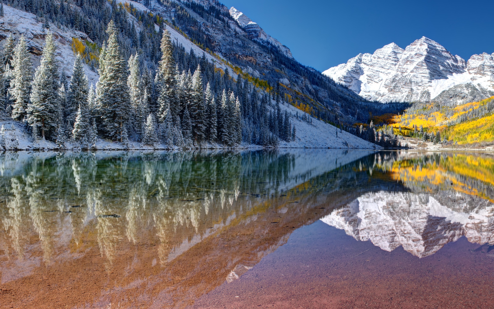
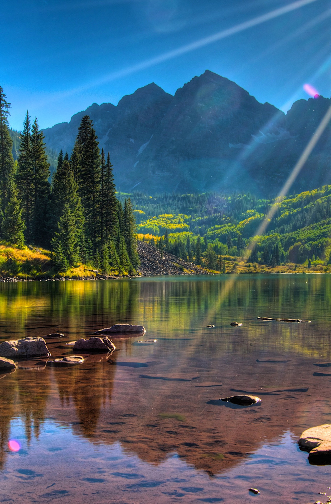
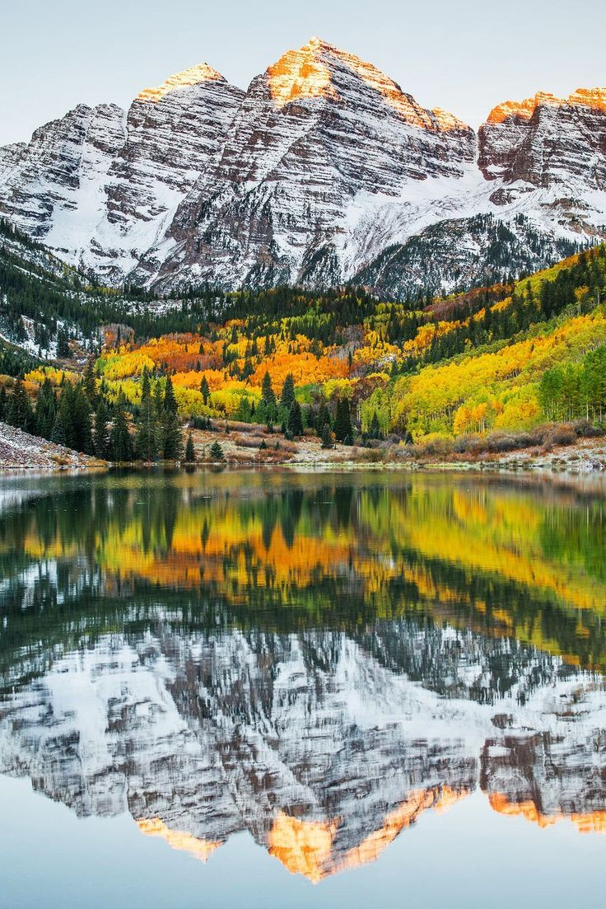
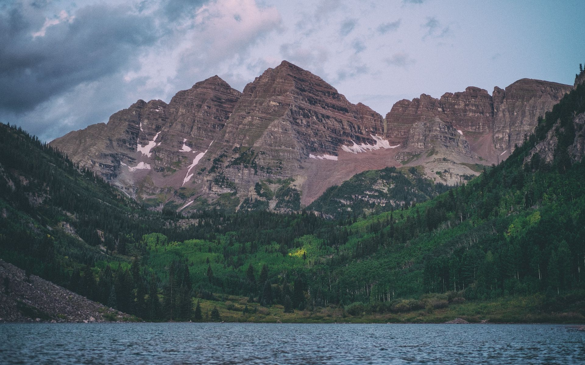

Северная Америка
Северная Америка
Ледяные пещеры Менденхолл, Аляска

Исторической особенностью этого города является то обстоятельство, что после перехода Аляски под юрисдикцию Соединенных Штатов Америки Джуно стал первым городом, который уже был "чисто" американским в этом регионе. При этом как отмечают историки освоения Аляски "Джуно" – это уже третье имя, которое было присвоено этому городу за всю историю его существования. Первоначальное Харрисбург буквально через полгода было изменено на Роквелл и только после того, как за дело наименования города взялись сами старатели город приобрел свое окончательное имя Джуно. Однако в современной истории большей известности Джуно принесла ледяная пещера, расположенная под ледником Менденхолл.
Если задаться целью и путешествовать по местам знаменитых золотоискателей Аляски, то вероятней всего вы не обойдете вниманием небольшой городок, расположенный на юго-востоке одноименного штата. А свое имя Джуно, городок получил по имени знаменитого в этих краях золотоискателя Джозефа Джуно (Joseph Juneau), который еще в 1881 году нашел в этих местах довольно большое месторождение благородного металла.
"Sitaantaagu" или "Ледник за городом" Именно так первоначально именовали на топографических картах девятнадцатого века ледник Менденхолл на языке тлинкит, народности населявшей эти территории до прихода сюда европейцев. Однако, в 1891 году эта традиция была несколько изменена и ледник получил свое окончательное имя в честь молодого английского географа Томаса Корвина Менденхолла, который не только первым описал эту ледяную гору длинною в девятнадцать километров, но и нанес ее на географическую карту США. И именно так, закончилось первое и последнее путешествие в США по Аляске этого удачливого картографа.
Марун-Беллс, Колорадо
Марун Беллс, по-английски Maroon Bells - это средней высоты вершина, расположенная в северных средних-субтропических широтах западного полушария, в точке с координатами 39.0708° северной широты, 106.989° западной долготы. Географически вершина расположена следующим образом: Северная Америка, Скалистые горы, Elk Range Area.
Озеро Марун высотой 9 580 футов (2920 м) занимает бассейн, который был вылеплен ледниками Ледникового периода и позже запружен оползнем и обломками камнепада с крутых склонов над дном долины.


Гора возвышается на четыре тысячи триста пятнадцать метров, или четырнадцать тысяч сто пятьдесят шесть футов. Для восхождения на вершину лучше всего подходят Июнь, Июль, Август, Сентябрь. Покорение вершины Марун Беллс является несложной с точки зрения спортивного альпинизма задачей. Для успешного восхождения вам скорее всего не потребуются ни кошки, ни сложная страховка, восхождение может быть совершено при любой погоде и практически в любой сезон. Организация промежуточных лагерей, как и сложная логистика вам не потребуется.
Бассейн Гамильтон, Техасе
Бассейн Гамильтон или Гамильтон Пул (Hamilton pool) – это интереснейшее природное образование в американском штате Техас. Формирование бассейна довольно интересно. Долгое время здесь протекала подземная река. Тысячи лет назад, из-за непрерывной эрозии, свод подземной реки обвалился, сделав бассейн открытым.
Бассейн Гамильтон является главным «экспонатом» одноименного заповедника. Общая площадь заповедника чуть меньше 1 км2. Кроме озера с водой нефритового зеленого цвета, здесь есть водопад высотой 15 метров. Он питается водой небольшой реки Гамильтон-Крик.
В середине 1860-х годов эти земли принадлежали Моргану Гамильтону (отсюда и пошло название). В 1880-х годах семья Реймерса, иммигранта из Германии, выкупила эту территорию. Говорят, что его восьмилетний сын и нашел провал.
Интересные факты - в окрестностях Гамильтон Пула обнаружены древние артефакты, возраст которых порядка 8000 лет. Водопад никогда полностью не высыхает, хотя поток воды может уменьшиться до небольшой струйки в засушливое время года. А вот уровень воды в бассейне не зависит от сезона.
Грейт Сэнд Дьюнс, Клорадо
Грейт Сэнд Дьюнс (Great Sand Dunes National Park and Preserve) – это природный заповедник с большими песчаными дюнами в штате Колорадо США, который в 2004 году получил статус национального парка (а прежде с 1932 был национальным памятником). Он представляет собой огромные площади дикой территории, а также более цивилизованной части, куда приезжают туристы, чтобы увидеть своими глазами высокие дюны долины Сан-Луис и заснеженные пики горного хребта Сангре-де-Кристо.
Считается, что песок был смыт ручьями с гор Сангре-де-Кристо, а также принесен ручьем Медано в то время, когда в долине Сан-Луис было озеро на месте песчаных барханов. И при поднятии плато Колорадо и превращении его в пустыню озеро высохло, оставив намытый песок. А беспощадные пустынные ветра завершили свое дело, гоняя песок тысячи лет по своим маршрутам туда-сюда и нанося его в образованный самой природой уголок, закрытый с двух сторон горами.
Что касается сложившейся экосистемы вокруг высоких дюн, ради которой все приезжают в этот национальный парк, то она и вправду уникальна, совсем как в парке Бэдлендс. Посмотреть ее безусловно стоит своими глазами в любое время года, да и по дюнам полазить будет довольно интересно. Но стоит помнить, что из-за жары на песках рекомендуется всегда брать с собой запас воды и пить ее около 4 литров в день, дабы избежать обезвоживания.
Интересный факт: Особенностью Грейт Сэнд Дьюнс является то, что в отличии от других национальных парков США на его территории разрешено охотиться.